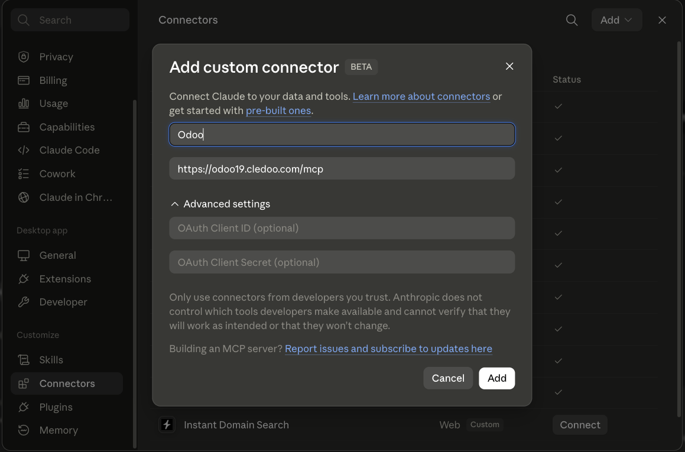
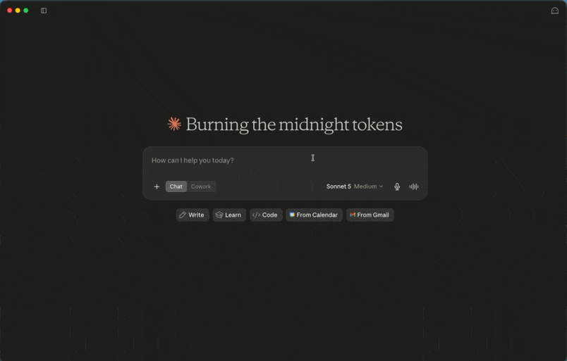

LGPL-3
Odoo 18
Odoo 19
MCP
Free & open source · Native Odoo module · No external server
Install the module, flip one switch, connect Claude — or ChatGPT, Copilot, Le Chat, any MCP client. Every call runs as the connected user, under their existing Odoo rights — nothing more.
Works with any MCP client
Secure by design
Every call runs as the connected user — exactly what they'd see in the interface, field rights included.
The module runs inside your instance. Nothing leaves your server, no SaaS relay, no middleman.
Odoo consent screen, revoke any connected agent in one click from Settings. No API key to pass around.
Built-in OAuth 2.1 with a branded consent screen: paste your MCP URL into claude.ai, ChatGPT or Le Chat, log into Odoo, approve. Plain Odoo API keys work side by side for header-capable clients.
A curated, admin-editable model catalog — not a 500-model dump — compact field metadata, no inline binary blobs, pagination probes and a 100 kB response guard. The AI spends its context on answers, not noise.
Every call runs as a real Odoo user under their ACLs and record rules — give the AI a dedicated user to control exactly what it can touch.
Messages written through MCP get a small "MCP" badge with the AI client's name, so humans always know who wrote what.
A /mcp/health endpoint that self-diagnoses common deployment issues, per-connection rate limiting, per-agent activity counters. Multi-company aware. Tested on Odoo 18 and 19.
Stdlib-only Python, no extra process to host, nothing new to deploy or monitor.
Three steps, and you're set
From the Odoo Apps Store, on your on-premise or Odoo.sh instance — use the branch matching your series, 18.0 or 19.0.
One switch in Settings > General Settings > MCP Server. Your instance's /mcp endpoint is ready.
Paste the URL in claude.ai, log into Odoo, approve. Any other client connects with an Odoo API key as a bearer token.
Step 1 in detail — installing the zip
cledoo_mcp/ folder.addons_path in odoo.conf).On Odoo.sh, commit the cledoo_mcp/ folder to your linked GitHub repository instead — the next build installs it.

Step 2 — one toggle, one endpoint URL, everything managed from Settings.

Step 3 — paste your /mcp URL as a connector in claude.ai.

Log into Odoo, approve — the AI acts with your Odoo permissions, never more.

Done — Claude, live on your Odoo data.
A curated catalog, not a 500-model dump
Discover
Read & analyze
Act
This module deliberately adds no policy engine of its own:
create_record, update_record,
delete_record, post_message) run plain
create/write/unlink as that user — the backstop is that user's Odoo
rights. Give the AI a dedicated user with tight ACLs.Cledoo MCP gives the AI access, bounded by each user's Odoo rights. A separate module, Cledoo MCP Pro, adds governance over the AI itself: a global read-only kill-switch and per-connection scopes, a full, exportable audit trail, data privacy masking even in exports, per-user allow/deny policies with a dry-run simulator, human-confirmed writes, and an outbound-comms guard. Available on the Odoo Apps Store.
Data privacy: no data collected by default. One opt-in, off-by-default anonymous usage ping (no customer data) — details in the Privacy Policy. Not installable on Odoo Online (SaaS): custom modules require Odoo.sh or an on-premise deployment.
Questions or issues: support@cledoo.com